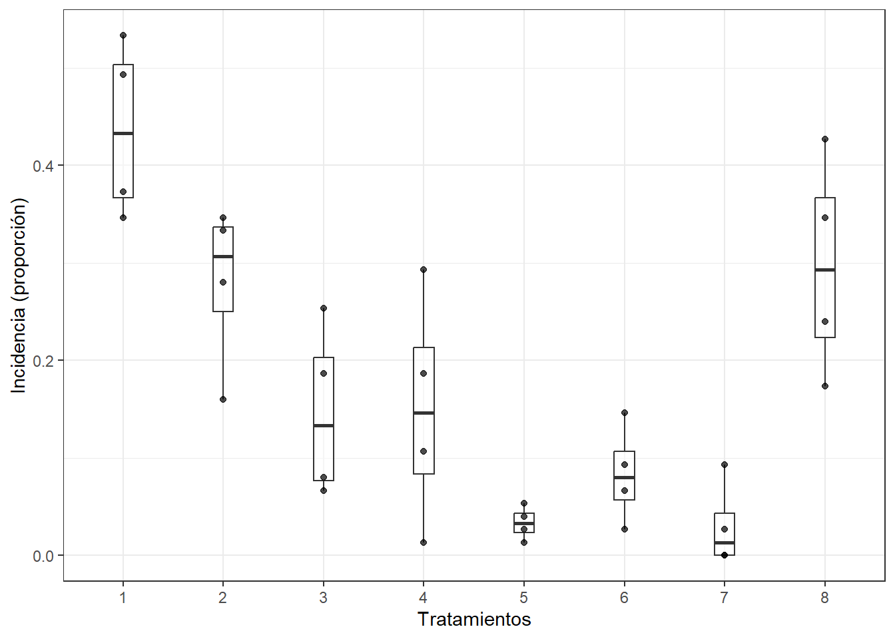
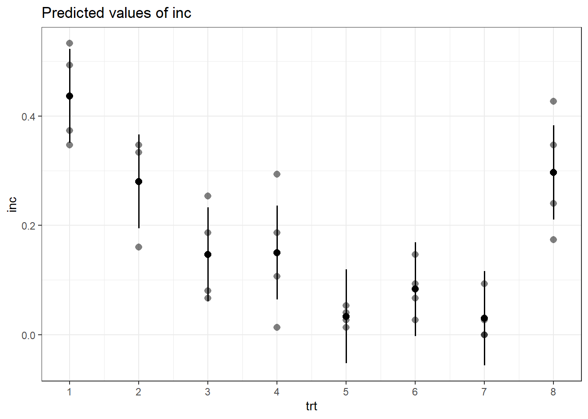
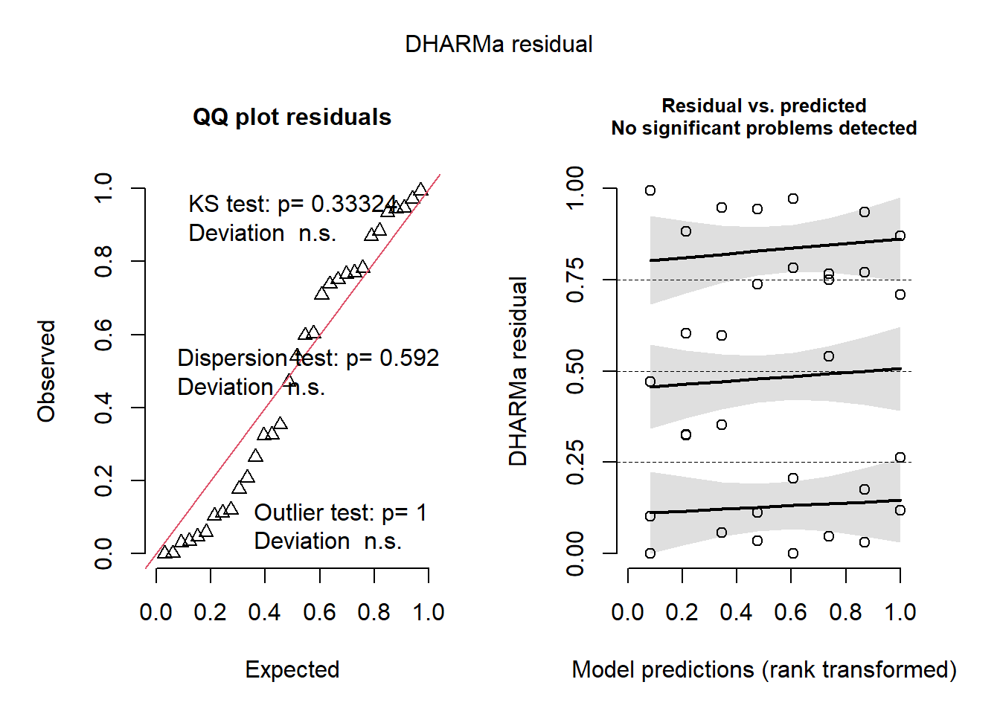

phom_raw <- import("https://raw.githubusercontent.com/juanchiem/glm_webinar/main/data/phomopsis.csv") %>% tibble
# phom_raw <- rio::import("data/phomopsis.csv") %>% tibble GLM binomial DBCA - Phomopsis en frutilla
Phomopsis Leaf Blight and Fruit Rot of Strawberry
Michael A. Ellis and Mizuho Nita, Department of Plant Pathology (OSU)
Phomopsis leaf blight is a common disease of strawberry in the eastern United States Although the fungus infects leaves early in the growing season, leaf blight symptoms are most apparent on older leaves near or after harvest in Ohio. The economic importance of leaf blight in Ohio appears to be relatively minor; however, incidence of the disease has been increasing. The disease can weaken strawberry plants through the destruction of older foliage. Weakened plants can result in reduced yields the following year. In years highly favorable for disease development, leaf blight can cause defoliation and, in some cases, death of plants.
Setup
Cargamos paquetes de utilidad para esta sesión y configuramos la estética global de los gráficos.
Data
Madden, L. V., W. W. Turechek, and M. Nita. “Evaluation of generalized linear mixed models for analyzing disease incidence data obtained in designed experiments.” Plant Disease 86.3 (2002): 316-325.
Efecto de tratamientos de fungicidas sobre tizon foliar por Phomopsis en frutilla (Nita, Madden & Ellis)
Patógeno: Phomopsis obscurans
Diseño en bloques completos aleatorizados (RCBD)
Cuatro bloques (bk, j = 1, …, 4)
Ocho tratamientos: control no tratado + 7 fungicidas (trt, i = 1, …, 8) aleatorizados dentro de cada bloque
Variable respuesta (Y): Numero de foliolos enfermos
n Tamaño de la muestra
Incidencia por parcela = y/n
Acondicionamiento
phom_raw # A tibble: 32 × 4
trt bk y n
<int> <int> <int> <int>
1 1 1 40 75
2 1 2 26 75
3 1 3 37 75
4 1 4 28 75
5 2 3 12 75
6 2 2 21 75
7 2 1 26 75
8 2 4 25 75
9 3 1 19 75
10 3 2 5 75
# ℹ 22 more rows# Factorizamos nuestros variables independientes (predictoras) y calculamos la incidencia en proporción
phom_dat <- phom_raw %>%
mutate_at(vars(trt, bk), as.factor) %>%
mutate(inc=y/n) %>%
arrange(trt)
phom_dat# A tibble: 32 × 5
trt bk y n inc
<fct> <fct> <int> <int> <dbl>
1 1 1 40 75 0.533
2 1 2 26 75 0.347
3 1 3 37 75 0.493
4 1 4 28 75 0.373
5 2 3 12 75 0.16
6 2 2 21 75 0.28
7 2 1 26 75 0.347
8 2 4 25 75 0.333
9 3 1 19 75 0.253
10 3 2 5 75 0.0667
# ℹ 22 more rowsphom_dat %>%
group_by(trt) %>%
skim(inc)| Name | Piped data |
| Number of rows | 32 |
| Number of columns | 5 |
| _______________________ | |
| Column type frequency: | |
| numeric | 1 |
| ________________________ | |
| Group variables | trt |
Variable type: numeric
| skim_variable | trt | n_missing | complete_rate | mean | sd | p0 | p25 | p50 | p75 | p100 | hist |
|---|---|---|---|---|---|---|---|---|---|---|---|
| inc | 1 | 0 | 1 | 0.44 | 0.09 | 0.35 | 0.37 | 0.43 | 0.50 | 0.53 | ▇▁▁▃▃ |
| inc | 2 | 0 | 1 | 0.28 | 0.09 | 0.16 | 0.25 | 0.31 | 0.34 | 0.35 | ▃▁▁▃▇ |
| inc | 3 | 0 | 1 | 0.15 | 0.09 | 0.07 | 0.08 | 0.13 | 0.20 | 0.25 | ▇▁▁▃▃ |
| inc | 4 | 0 | 1 | 0.15 | 0.12 | 0.01 | 0.08 | 0.15 | 0.21 | 0.29 | ▇▇▁▇▇ |
| inc | 5 | 0 | 1 | 0.03 | 0.02 | 0.01 | 0.02 | 0.03 | 0.04 | 0.05 | ▇▇▁▇▇ |
| inc | 6 | 0 | 1 | 0.08 | 0.05 | 0.03 | 0.06 | 0.08 | 0.11 | 0.15 | ▇▇▇▁▇ |
| inc | 7 | 0 | 1 | 0.03 | 0.04 | 0.00 | 0.00 | 0.01 | 0.04 | 0.09 | ▇▃▁▁▃ |
| inc | 8 | 0 | 1 | 0.30 | 0.11 | 0.17 | 0.22 | 0.29 | 0.37 | 0.43 | ▇▇▁▇▇ |
Visualización
phom_dat %>%
ggplot() +
aes(x=trt, y = inc) +
geom_boxplot(alpha=.5, width = .2) +
geom_point(alpha=.7) +
labs(x="Tratamientos", y="Incidencia (proporción)")
Modelo lineal - LM
(Abordaje erróneo)
Efecto fijo al tratamiento y aleatorio a los bloques
# pacman::p_load(lmerTest)
mod_phom_LM <- lmer(inc ~ trt + (1|bk), data=phom_dat)Diagnósticos
check_homogeneity(mod_phom_LM)OK: There is not clear evidence for different variances across groups (Bartlett Test, p = 0.197).check_normality(mod_phom_LM)OK: residuals appear as normally distributed (p = 0.182).ANOVA
car::Anova(mod_phom_LM)Analysis of Deviance Table (Type II Wald chisquare tests)
Response: inc
Chisq Df Pr(>Chisq)
trt 114.69 7 < 2.2e-16 ***
---
Signif. codes: 0 '***' 0.001 '**' 0.01 '*' 0.05 '.' 0.1 ' ' 1summary(mod_phom_LM)Linear mixed model fit by REML ['lmerMod']
Formula: inc ~ trt + (1 | bk)
Data: phom_dat
REML criterion at convergence: -43.7
Scaled residuals:
Min 1Q Median 3Q Max
-1.7969 -0.6917 0.1535 0.7623 1.2557
Random effects:
Groups Name Variance Std.Dev.
bk (Intercept) 0.001814 0.04259
Residual 0.005051 0.07107
Number of obs: 32, groups: bk, 4
Fixed effects:
Estimate Std. Error t value
(Intercept) 0.43667 0.04143 10.541
trt2 -0.15667 0.05025 -3.117
trt3 -0.29000 0.05025 -5.771
trt4 -0.28667 0.05025 -5.704
trt5 -0.40333 0.05025 -8.026
trt6 -0.35333 0.05025 -7.031
trt7 -0.40667 0.05025 -8.092
trt8 -0.14000 0.05025 -2.786
Correlation of Fixed Effects:
(Intr) trt2 trt3 trt4 trt5 trt6 trt7
trt2 -0.607
trt3 -0.607 0.500
trt4 -0.607 0.500 0.500
trt5 -0.607 0.500 0.500 0.500
trt6 -0.607 0.500 0.500 0.500 0.500
trt7 -0.607 0.500 0.500 0.500 0.500 0.500
trt8 -0.607 0.500 0.500 0.500 0.500 0.500 0.500Podriamos avanzar con el modelo, hacia la estimación de medias predichas por el mismo
em_phom_LM <- emmeans(mod_phom_LM, ~ trt, type="response")
# comparaciones multiples
res_phom_LM <- cld(em_phom_LM, Letters = letters, alpha = .05, type = "response")
res_phom_LM trt emmean SE df lower.CL upper.CL .group
7 0.0300 0.0414 16.1 -0.05777 0.118 a
5 0.0333 0.0414 16.1 -0.05443 0.121 a
6 0.0833 0.0414 16.1 -0.00443 0.171 a
3 0.1467 0.0414 16.1 0.05890 0.234 ab
4 0.1500 0.0414 16.1 0.06223 0.238 ab
2 0.2800 0.0414 16.1 0.19223 0.368 bc
8 0.2967 0.0414 16.1 0.20890 0.384 bc
1 0.4367 0.0414 16.1 0.34890 0.524 c
Degrees-of-freedom method: kenward-roger
Confidence level used: 0.95
P value adjustment: tukey method for comparing a family of 8 estimates
significance level used: alpha = 0.05
NOTE: If two or more means share the same grouping symbol,
then we cannot show them to be different.
But we also did not show them to be the same. plot_model(mod_phom_LM, type='pred', show.data=T)$trt
• Los errores estándar estimados (SE) son todos incorrectos (por definición), deben ser funciones de la media para datos binomiales
• Los SE incorrectos darán pruebas incorrectas de significación para los efectos del tratamiento y conducirán a conclusiones incorrectas
Modelo lineal generalizado - GLM
Proporción de éxitos / total muestra (incidencia)
mod_phom_GLM <- glmer(inc ~ trt + (1|bk),
family="binomial",
weights = n, # pesos o tamaño de muestra
data=phom_dat)Diagnósticos
simulateResiduals(mod_phom_GLM) %>% plot()
Deviance - Wald chisquare tests
car::Anova(mod_phom_GLM, type = "III")Analysis of Deviance Table (Type III Wald chisquare tests)
Response: inc
Chisq Df Pr(>Chisq)
(Intercept) 1.8912 1 0.1691
trt 225.6604 7 <2e-16 ***
---
Signif. codes: 0 '***' 0.001 '**' 0.01 '*' 0.05 '.' 0.1 ' ' 1# install.packages("jtools")
library(jtools)
summ(mod_phom_GLM, exp = T, confint = T)| Observations | 32 |
| Dependent variable | inc |
| Type | Mixed effects generalized linear model |
| Family | binomial |
| Link | logit |
| AIC | 213.66 |
| BIC | 226.85 |
| Pseudo-R² (fixed effects) | 0.27 |
| Pseudo-R² (total) | 0.29 |
| exp(Est.) | 2.5% | 97.5% | z val. | p | |
|---|---|---|---|---|---|
| (Intercept) | 0.77 | 0.53 | 1.12 | -1.38 | 0.17 |
| trt2 | 0.49 | 0.35 | 0.70 | -4.02 | 0.00 |
| trt3 | 0.22 | 0.15 | 0.32 | -7.58 | 0.00 |
| trt4 | 0.22 | 0.15 | 0.33 | -7.50 | 0.00 |
| trt5 | 0.04 | 0.02 | 0.08 | -9.19 | 0.00 |
| trt6 | 0.11 | 0.07 | 0.18 | -9.05 | 0.00 |
| trt7 | 0.04 | 0.02 | 0.08 | -9.09 | 0.00 |
| trt8 | 0.54 | 0.38 | 0.76 | -3.58 | 0.00 |
| Group | Parameter | Std. Dev. |
|---|---|---|
| bk | (Intercept) | 0.29 |
| Group | # groups | ICC |
|---|---|---|
| bk | 4 | 0.03 |
tab_model(mod_phom_GLM)La chance de un foliolo de frutilla presentar sintoma de phomopsis disminuye un 51% cuando se aplica el tratamiento 2 respecto al control sin tratar
Medias predichas por el modelo ajustado y comparaciones multiples
em_phom_GLM <- emmeans(mod_phom_GLM, ~ trt, type="response")
res_phom_GLM <- cld(em_phom_GLM, Letters = letters, alpha = .05, type = "response")
kable(res_phom_GLM)| trt | prob | SE | df | asymp.LCL | asymp.UCL | .group | |
|---|---|---|---|---|---|---|---|
| 7 | 7 | 0.0287774 | 0.0103239 | Inf | 0.0141619 | 0.0575954 | a |
| 5 | 5 | 0.0319911 | 0.0109644 | Inf | 0.0162428 | 0.0620453 | a |
| 6 | 6 | 0.0805244 | 0.0189648 | Inf | 0.0503415 | 0.1263952 | ab |
| 3 | 3 | 0.1428332 | 0.0269813 | Inf | 0.0976257 | 0.2042367 | b |
| 4 | 4 | 0.1461377 | 0.0273593 | Inf | 0.1002042 | 0.2082538 | b |
| 2 | 2 | 0.2763751 | 0.0391788 | Inf | 0.2064473 | 0.3592655 | c |
| 8 | 8 | 0.2932376 | 0.0402992 | Inf | 0.2208324 | 0.3778696 | c |
| 1 | 1 | 0.4357251 | 0.0462220 | Inf | 0.3481927 | 0.5274556 | d |
LM vs GLM
kable(res_phom_LM)| trt | emmean | SE | df | lower.CL | upper.CL | .group | |
|---|---|---|---|---|---|---|---|
| 7 | 7 | 0.0300000 | 0.0414271 | 16.12198 | -0.0577675 | 0.1177675 | a |
| 5 | 5 | 0.0333333 | 0.0414271 | 16.12198 | -0.0544342 | 0.1211009 | a |
| 6 | 6 | 0.0833333 | 0.0414271 | 16.12198 | -0.0044342 | 0.1711009 | a |
| 3 | 3 | 0.1466667 | 0.0414271 | 16.12198 | 0.0588991 | 0.2344342 | ab |
| 4 | 4 | 0.1500000 | 0.0414271 | 16.12198 | 0.0622325 | 0.2377675 | ab |
| 2 | 2 | 0.2800000 | 0.0414271 | 16.12198 | 0.1922325 | 0.3677675 | bc |
| 8 | 8 | 0.2966667 | 0.0414271 | 16.12198 | 0.2088991 | 0.3844342 | bc |
| 1 | 1 | 0.4366667 | 0.0414271 | 16.12198 | 0.3488991 | 0.5244342 | c |
Tratamientos 7, 5, 6, 3 y 4 no diferían entre si bajo LM, pero bajo GLM trat 3 y 4 son inferiores en su perfomance respecto a 7, 5 y 6.
Tratamientos 2 y 8 no diferian del testigo sin tratar bajo LM, pero si bajo abordaje GLM.